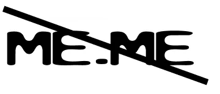
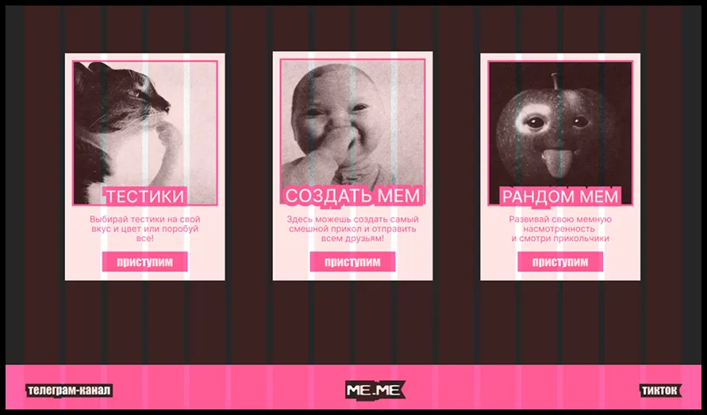
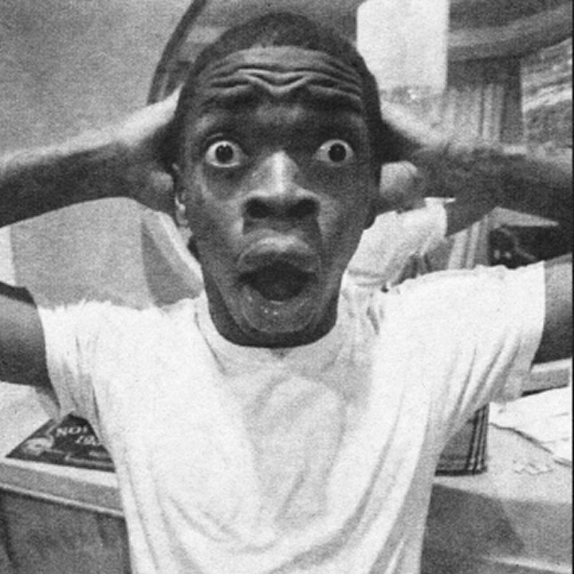
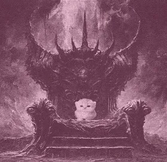

me.me — медиа о мемах! Медиа которое объединяет пользователей разных поколений, позволяя им исследовать, создавать и обсуждать мемы из различных эпох.
Стать не только развлекательной платформой, но и важным культурным ресурсом, который поможет объединить разные поколения через общий язык юмора.
Мы говорим на языке зумеров, но делаем это так, чтобы язык понимали и принимали даже те, кто далёк от мемов. Наш тон немного дерзкий, дружелюбный и шутливый.
Логотип динамичен, «забавен» и подчёркивает нейминг, отсылающий к самому слову «мем». Он состоит из мягких, будто плывущих букв и контрастной обводки, являющейся одним из главных элементов фирменного стиля.

Основными цветами являются белый и чёрный. Для акцентов используются розовый и бело-розовый градиент. Серый используется исключительно для подложки, иногда в качестве фона.
#FFFFFF
#FF65A6
#262626
Для основного текста используется читаемый и минималистичный Inter, идеально подходящий под мемы и хорошо работающий с обводкой.
Для акцентов используется Impact, разработанный специально для привлечения внимания. Он справляется и засчёт своей «прямой» обводки.
В десктопе основой является сетка в 16 колонок с отступами по краям в 64px и пробелами в 16px. Это позволяет нам максимально гибко расставлять элементы по странице с учётом нашего стиля.

Все фото на сайте проходят через обработку нашего фотостиля: чб, шум и специальная текстура. Это не касается видео, взятых из тиктока.

